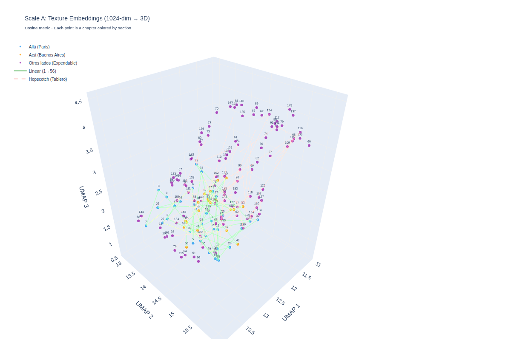
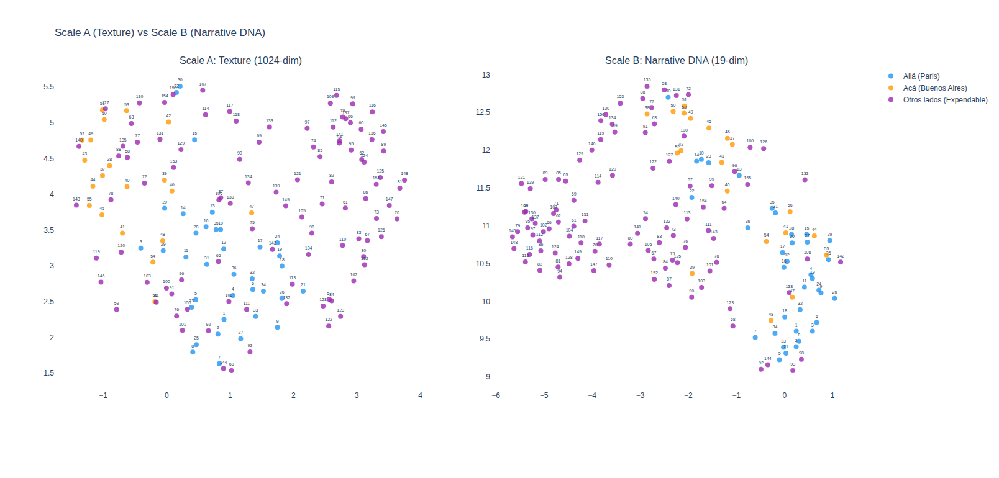
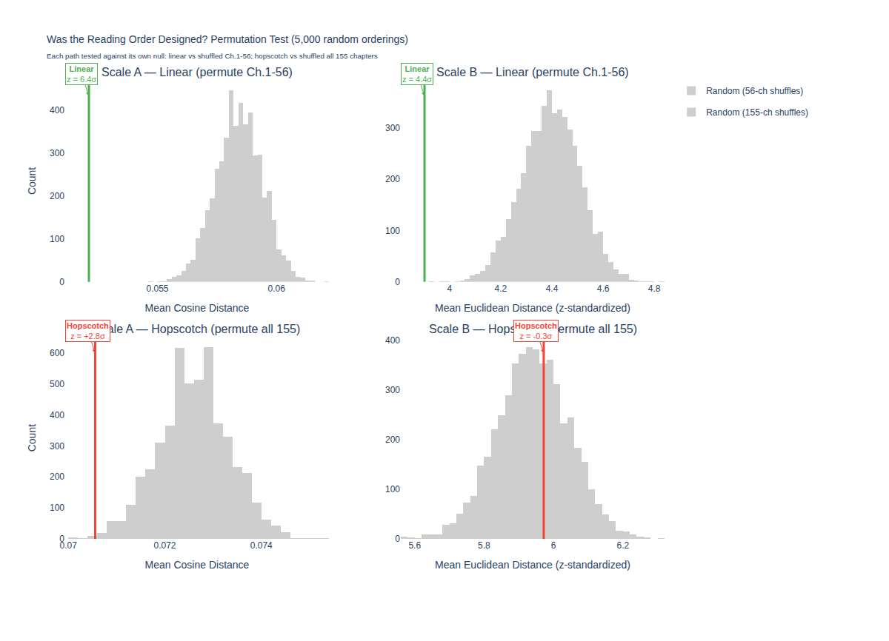
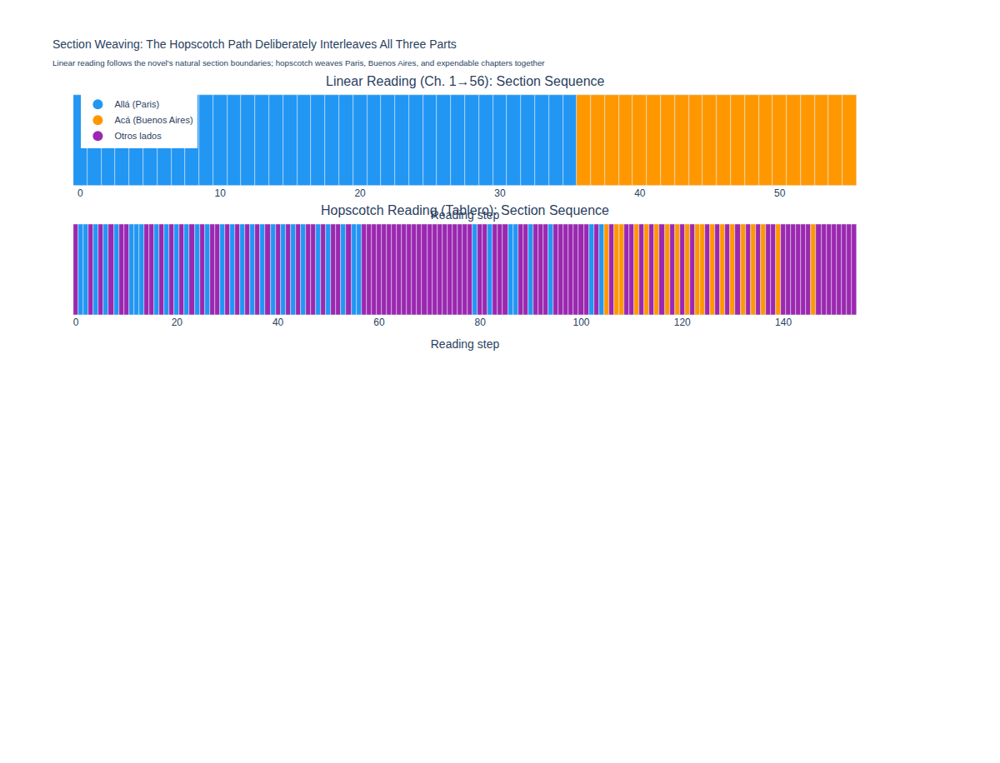
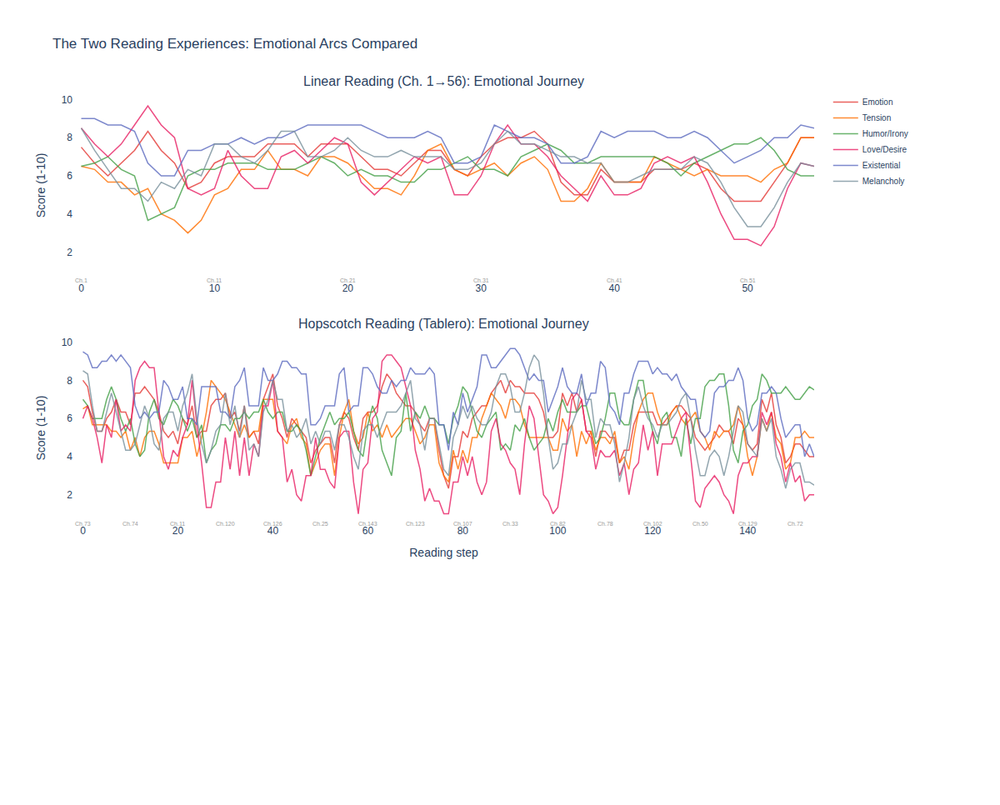

Carlos Crespo Macaya & Claude · 2026
In the first pages of Rayuela, before you read a single chapter, Cortázar gives you a choice. You can read the novel straight through — chapters 1 to 56 — like any other book. Or you can follow the Tablero de Dirección, a hopscotch path that leaps between all 155 chapters in an order the author prescribes: 73, 1, 2, 116, 3, 84, 4, 71…
Readers and scholars have argued about these two paths for sixty years. Is the hopscotch order designed for thematic continuity — deeper connections that the linear order misses? Or is it something else entirely?
We set out to answer this empirically. We converted every chapter of Rayuela into mathematical representations using AI, then traced both reading paths through that mathematical space. We measured each chapter in four complementary ways — from a machine-learning model’s undifferentiated impression of the whole passage, through content-free stylistic features and LLM-perceived style, to an explicit 19-dimensional scoring of narrative content. Then we tested both reading orders against 5,000 random alternatives to determine whether they could have arisen by chance.
What we found surprised us.

Figure 1 — The Novel in 3D. Each chapter is a point in space; chapters that the AI perceives as similar — in vocabulary, rhythm, theme, and tone — sit close together. The green line traces the linear path; the red dashed line traces the hopscotch. ([Interactive version](https://carloscrespomacaya.com/rayuela/3d_scale_a.html))
Before feeding a single word to the AI, we had to operate on the text.
Every chapter of Rayuela ends with a small number in parentheses — a signpost telling the hopscotch reader where to jump next. Leave those numbers in, and any pattern the AI finds would be contaminated: we’d have embedded the reading order inside the data we were using to evaluate it. This is what statisticians call circular analysis. In plain language: cheating.
We also found a ghost. Chapter 55 is the only chapter the hopscotch path never visits — included in the linear order but omitted from the hopscotch path entirely.
We switched from a corruption-prone OCR scan to a clean digital source, stripped every navigation marker, and verified the resulting 155 chapters against the published text. This kind of data hygiene is invisible in the final analysis, but it’s where computational literary studies succeed or fail. If you don’t strip the editorial apparatus, you find structure the editor created, not the author.
We examined the novel through four complementary scales, arranged from broadest to most specific. Scales A and A’ use different technologies from B’ and B, but B’ and B share the same language model with different tasks — so they are complementary rather than fully independent.
The holistic lens (Scale A) converts each chapter into a list of 1,024 numbers using a multilingual AI model — a single point in high-dimensional space that captures the chapter’s overall character: vocabulary, rhythm, syntax, theme, mood, all compressed together without explicit labels. Think of it as an AI reader’s gut impression of each chapter, encoded mathematically. We chose a multilingual model because Cortázar slips between Spanish, French, and English mid-sentence. A monolingual model would have created artificial boundaries where Cortázar saw none.
The content-free lens (Scale A’) measures 26 purely formal features — sentence length, vocabulary richness, punctuation density, function word frequencies, code-switching between languages — that are by construction largely immune to meaning. These features capture how the prose is built, not what it says. If the holistic lens detects a pattern in the hopscotch ordering, the content-free lens helps us determine whether that pattern lives in form or meaning.
The stylistic lens (Scale B’) sits between form and content. A 27-billion-parameter language model assessed each chapter on 12 dimensions of perceived style — prose rhythm, descriptive density, vocabulary register, narrative distance, syntactic variety — focusing on how the prose reads rather than what it says.
The semantic lens (Scale B) captures what the prose says, explicitly. The same language model scored every chapter on 19 named dimensions — existential questioning, love and desire, humor and irony, interiority, spatial grounding, language experimentation, and 13 others — producing what we call a narrative DNA profile: a 19-number fingerprint of each chapter’s thematic content. (An original 20th dimension, temporal clarity, was excluded after inter-rater testing showed its rubric was ambiguous — two different models interpreted it in opposite ways.)
Why four scales? Because no single measurement can distinguish style from meaning. The four instruments form a gradient — from undifferentiated impression (Scale A) through pure form (A’) and perceived style (B’) to explicit content (B). If a finding appears at one end of the gradient but not the other, the gradient itself tells us what’s driving it.
We validated the semantic lens with Chapter 68, the famous Gliglico chapter, written entirely in a language Cortázar invented. The model scored it: language experimentation = 10, love and desire = 8, spatial grounding = 1, dialogue density = 1. It couldn’t read the invented language — nobody can — but it appeared to understand what the invented language was for. (A caveat: the model may have encountered commentary about this famous chapter during training, so this is a plausibility check rather than proof of literary comprehension.)

Figure 2 — Two Ways to See the Same Novel. Left: chapters in holistic space (the AI's undifferentiated impression). Right: chapters in semantic space (19 explicit dimensions). In holistic space, the novel's three sections overlap completely — the AI sees more similarity than difference across Paris, Buenos Aires, and the expendable chapters. In semantic space, they begin to separate. The divisions readers feel seem to be about specific thematic content, not overall impression. ([Interactive version](https://carloscrespomacaya.com/rayuela/umap_comparison.html))
With four instruments calibrated, we asked the question: are the two reading paths designed, or could they be random?
We measured the “smoothness” of each path — how similar consecutive chapters are as you read. Then we generated 5,000 random orderings of the same chapters and measured their smoothness. This gave us a baseline: if a reading order is no smoother than a random shuffle, it wasn’t designed for flow.
All four scales agree about the linear path. It is smoother than virtually every random ordering — fewer than 1 in 5,000 permutations matched its smoothness on any scale. An important caveat: z-score magnitudes are not directly comparable across the two paths, since the linear null shuffles 56 chapters while the hopscotch null shuffles all 155.
| Scale | What it measures | Linear | Hopscotch |
|---|---|---|---|
| A (Holistic) | Everything, undifferentiated | +6.4σ | +2.8σ |
| B (Narrative DNA) | Explicit meaning, 19 dimensions | +4.5σ | −0.3σ |
| A’ (Stylometric) | Pure form, content-free | +3.9σ | +1.1σ |
| B’ (LLM Stylistic) | Perceived style, 12 dimensions | +3.2σ | +1.3σ |
Positive = smoother than random. Bold = statistically significant after Bonferroni correction for 8 primary smoothness tests at α = 0.05 (threshold ≈ 2.5σ).
The hopscotch path tells a gradient story. Through the holistic lens — the AI’s undifferentiated impression — the hopscotch is moderately smoother than chance (+2.8σ, the only hopscotch result that survives correction for multiple testing, stable across nine independent random seeds). Through the stylometric and LLM stylistic lenses, there’s a faint positive signal (+1.1σ and +1.3σ) — suggestive but not statistically significant. And through the semantic lens — the 19 explicit dimensions of narrative content — the hopscotch is indistinguishable from a random shuffle (−0.3σ).
The pattern is striking: as measurement moves from holistic to explicit, the hopscotch signal fades. Something in the ordering appears intentional — but it’s not the thematic content. We call it atmospheric coherence: a quality the holistic lens detects but the semantic decomposition cannot name.

Figure 3 — Was the Reading Order Designed? Each path is tested against its own null distribution (linear: shuffled Ch.1-56; hopscotch: shuffled all 155 chapters). The linear path is far smoother than any random ordering on all four scales. The hopscotch falls within the random range on the semantic scale — but is moderately smoother than random (~2.8σ) on the holistic scale. ([Interactive version](https://carloscrespomacaya.com/rayuela/article_permutation.html))
Smoothness measures how far you travel between consecutive chapters. But there’s another question: how sharply does the path change direction?
Curvature measures the angle between successive direction vectors — whether the path curves gently or jerks abruptly. The linear path curves gently on all scales (z ≈ +1.3σ to +1.7σ) — a river with gradual bends. The hopscotch path is the opposite: on Scale B (explicit meaning), its curvature is −4.7σ, meaning sharper directional changes than virtually any random ordering.
The hopscotch does not appear to be merely random in its semantic transitions. It looks like an anti-path — extremely jagged, as if Cortázar chose transitions that wrench the reader’s thematic orientation. Not a shuffled deck, but a deck stacked for discontinuity.
What does this mean?
The data suggests Cortázar didn’t design the hopscotch for smooth thematic reading. He seems to have designed it for collision — at the level of explicit narrative content, consecutive chapters are more abruptly juxtaposed than a random shuffle would produce. But at the level of holistic impression — the subtle, undifferentiated qualities that a reader absorbs without naming — there is a faint intentional thread. The hopscotch appears to jar you thematically while maintaining a quiet undertow of atmospheric coherence.
The weaving pattern makes this visible. In the linear reading, you progress through Paris (chapters 1-36), then Buenos Aires (37-56), in clean blocks. In the hopscotch, Cortázar interleaves all three sections from the first step — Paris, expendable, Buenos Aires, expendable, Paris — deliberately fragmenting the reader’s sense of place and time.

Figure 4 — Section Weaving. Top: the linear path (solid blocks of blue, then orange). Bottom: the hopscotch (a kaleidoscope of alternating colors). The hopscotch never lets you stay in one world for long. ([Interactive version](https://carloscrespomacaya.com/rayuela/article_weaving.html))
Trace any single dimension of meaning along both paths and the difference is striking. Take tension and anxiety: the linear path builds and releases in long waves, like a tide. The hopscotch path spikes and drops in arrhythmic pulses.

Figure 5 — Emotional Arcs. Six dimensions of meaning traced along both reading paths. The linear path builds in waves. The hopscotch is near-random in its explicit narrative content — the collision appears to be the design. ([Interactive version](https://carloscrespomacaya.com/rayuela/article_journey.html))
The reader who follows the hopscotch seems meant to experience something like the disorientation of Oliveira himself — wandering between cities and selves and modes of being. The collisions between chapters may be the message. You’re not supposed to settle in. You’re supposed to be thrown.
We should be precise about what this analysis establishes and what it doesn’t.
What it establishes: The linear reading order is designed for smooth flow — all four scales agree, with z-scores ranging from +3.2σ to +6.4σ, all surviving correction for multiple testing. Fewer than 1 in 5,000 random orderings match its smoothness on any scale. The hopscotch order is not designed for smooth semantic flow; in explicit narrative dimensions, it is indistinguishable from random in smoothness (−0.3σ) and sharper than random in curvature (−4.7σ). But the holistic lens detects moderate intentional smoothness (+2.8σ, stable across nine random seeds) — the hopscotch has a coherence that our explicit decompositions cannot fully name.
What it suggests: Cortázar may have designed the hopscotch for deliberate thematic collision — collision-dominant, but with a quiet undertow. The four-scale gradient makes this interpretation more compelling than any single measurement could: the signal is strongest where form and meaning are mixed (+2.8σ), present as a weak trend in purely formal scales (+1.1σ to +1.3σ), and absent in explicit semantic content (−0.3σ). This is consistent with an ordering that has atmospheric craft but not thematic planning.
What it cannot tell us: Whether the collision is aesthetically successful. Whether the atmospheric coherence is something Cortázar consciously calculated or whether his literary intuition produced it organically. Whether Rayuela is a great novel.
The AI is a microscope, not a judge. It reveals structure that was perhaps always there but hard to see with the unaided eye. What we make of that structure — whether we find it beautiful, significant, or worth arguing about — remains irreducibly human.
This is Part 1 of a two-part series. [Part 2](LINK_TO_PART2) examines the methodology in depth: the 19-dimensional scoring rubric, the content-free and LLM stylistic scales, the inter-rater reliability test with a second independent model, and the gradient of form-content resonance that explains why the hopscotch signal fades as measurement grows more explicit.
All interactive visualizations are available at [carloscrespomacaya.com/rayuela](https://carloscrespomacaya.com/rayuela). Code at [github.com/macayaven/rayuela](https://github.com/macayaven/rayuela).
Methodology note: 155 chapters analyzed at four scales — A (Holistic): 1024-dim embeddings (multilingual-e5-large-instruct); A’ (Stylometric): 26 content-free features (sentence structure, vocabulary, punctuation, syntax, code-switching); B’ (LLM Stylistic): 12 perceived-style dimensions (Qwen 3.5 27B); B (Narrative DNA): 19 semantic dimensions (Qwen 3.5 27B, z-standardized before distance computation; one dimension, temporal clarity, excluded after inter-rater reliability testing). Inter-rater reliability established with an independent second model (Llama-Nemotron 70B): overall Spearman ρ = 0.844, mean weighted κ = 0.753 (“substantial agreement”), 18/19 dimensions ρ ≥ 0.50. Statistical significance via permutation testing (5,000 random orderings, separate null distributions per path). All z-scores: positive = smoother than random. Bonferroni correction for 8 primary smoothness tests (2 paths × 4 scales) at α = 0.05: threshold ≈ 2.50σ. Linear: all four survive (+3.2σ to +6.4σ). Hopscotch: only Scale A survives (+2.8σ, stable across 9 RNG seeds). Cross-scale Mantel correlations: A↔B ρ = 0.53, A’↔B’ ρ = 0.61. Curvature: hopscotch −4.7σ on Scale B (semantic), −4.1σ on Scale A (holistic; d=1024 caveat: high-dimensional angles cluster, limiting interpretive value). Analysis conducted on NVIDIA DGX Spark (ARM64, GB10 GPU, 128 GB unified memory).